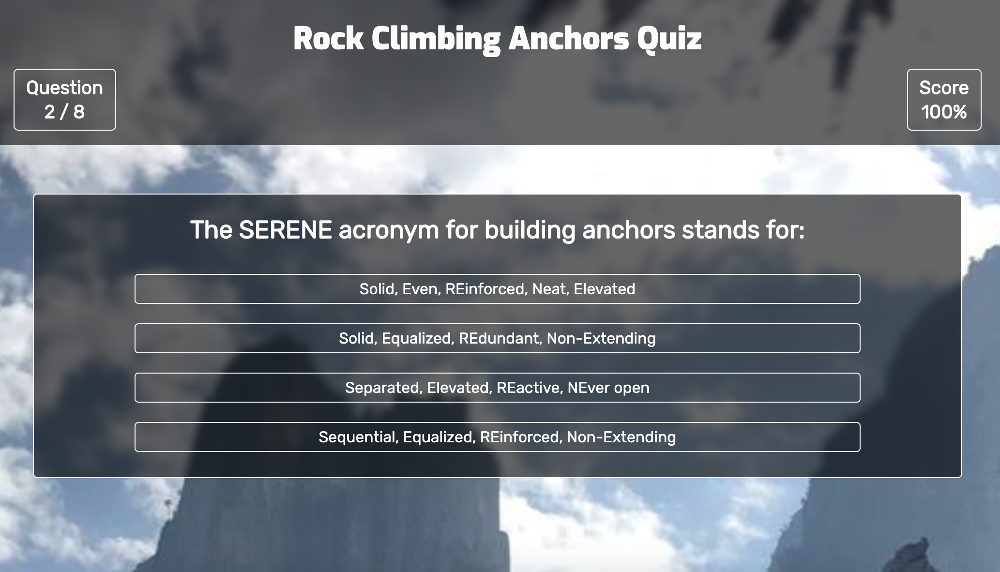

Keenan McDonald
I'm a web developer and outdoor adventure guide based in Austin, TX
Projects
-
Climbing Quiz
Test knowledge of anchors and knots
This is a brief quiz to test technical knowledge of anchors and knots used in climbing. It includes some of my favorite tidbits of climbing trivia and is geared toward serious climbers and guides.
Bio
I'm a web developer working on completing a Full Stack Web Development bootcamp at Thinkful. I started coding at a young age but took a break to pursue my other passions in my early 20's. I'm excited to come back to more technical pursuits as I work to develop new skills as a coder and web developer. I'm especially interested in developing products at the intersection of technology and the outdoors.
In my spare time, you can find me rock climbing throughout the U.S. and abroad. I'm an avid mountaineer, mountain biker, caver, and kayaker as well. I have spent years in the outdoor education feild working to get more kids spending time outside. In addition to outdoor pursuits, I am a musician and create ambient music using a modular synthesizer.
Contact
- email: keenanjmcdonald@gmail.com